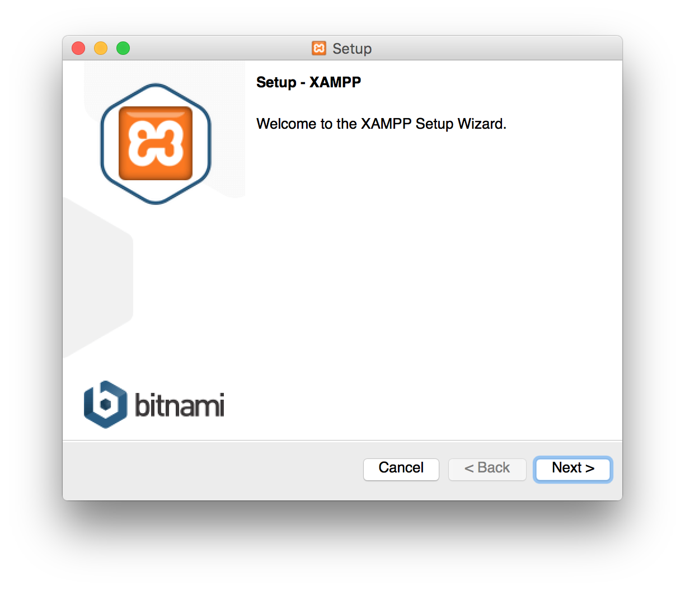
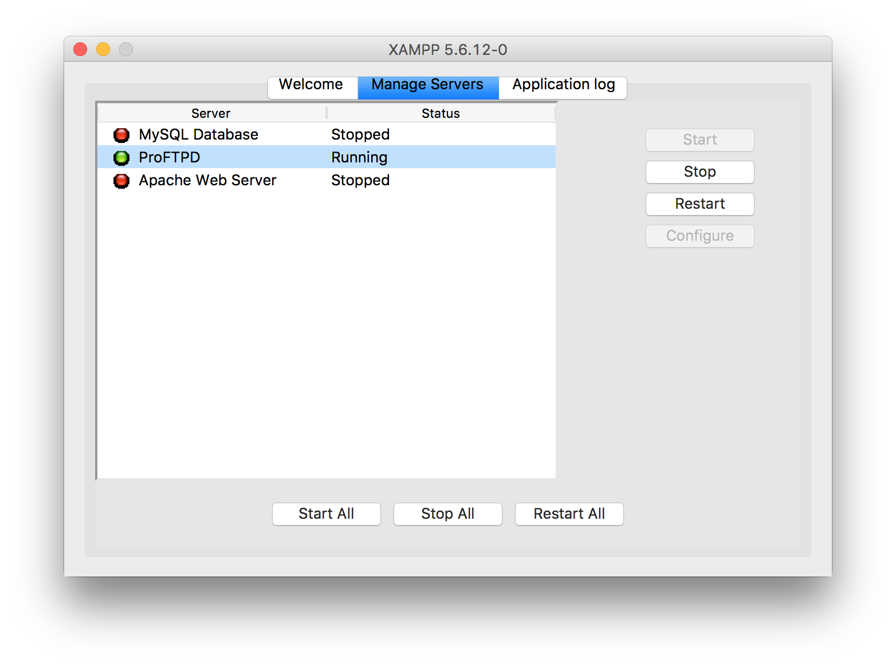
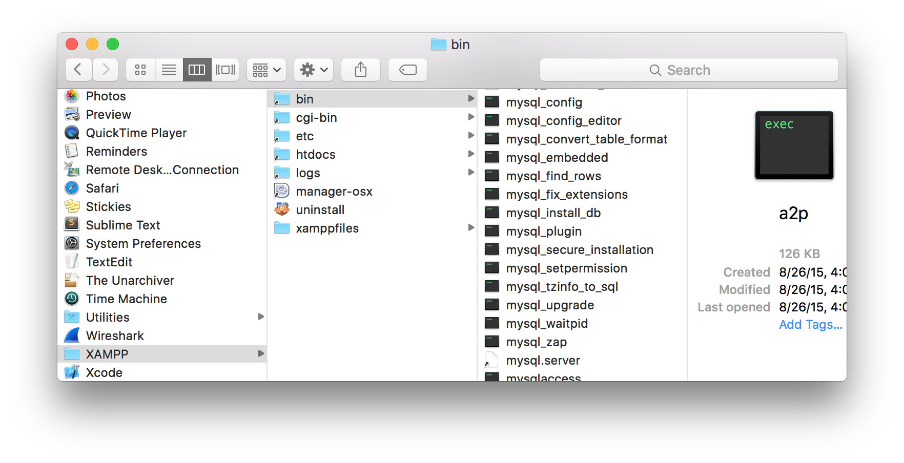
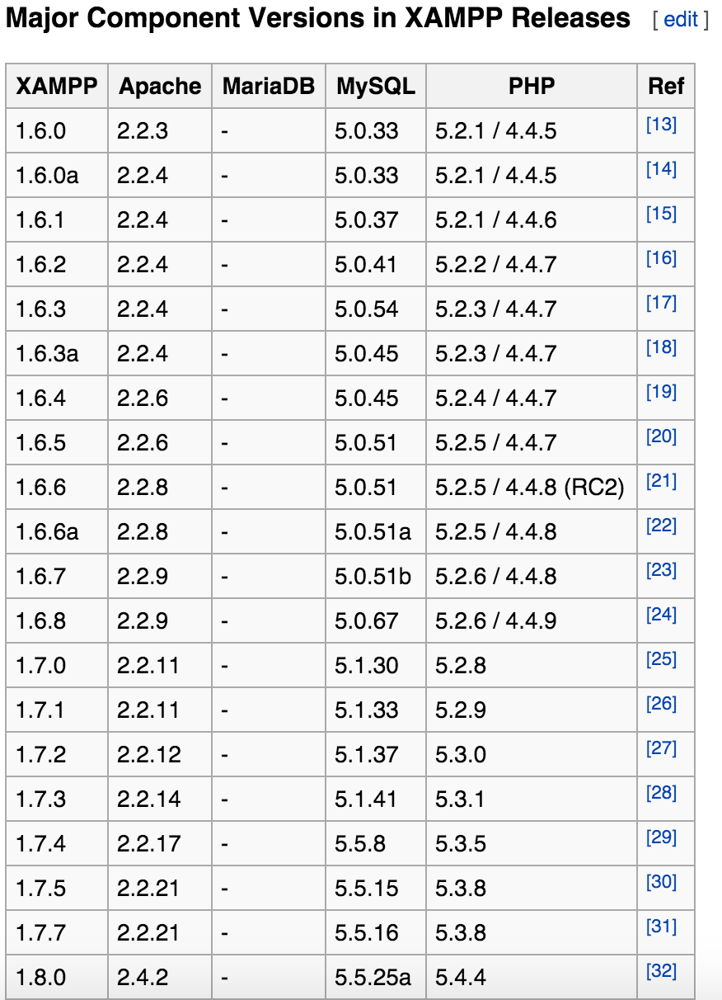
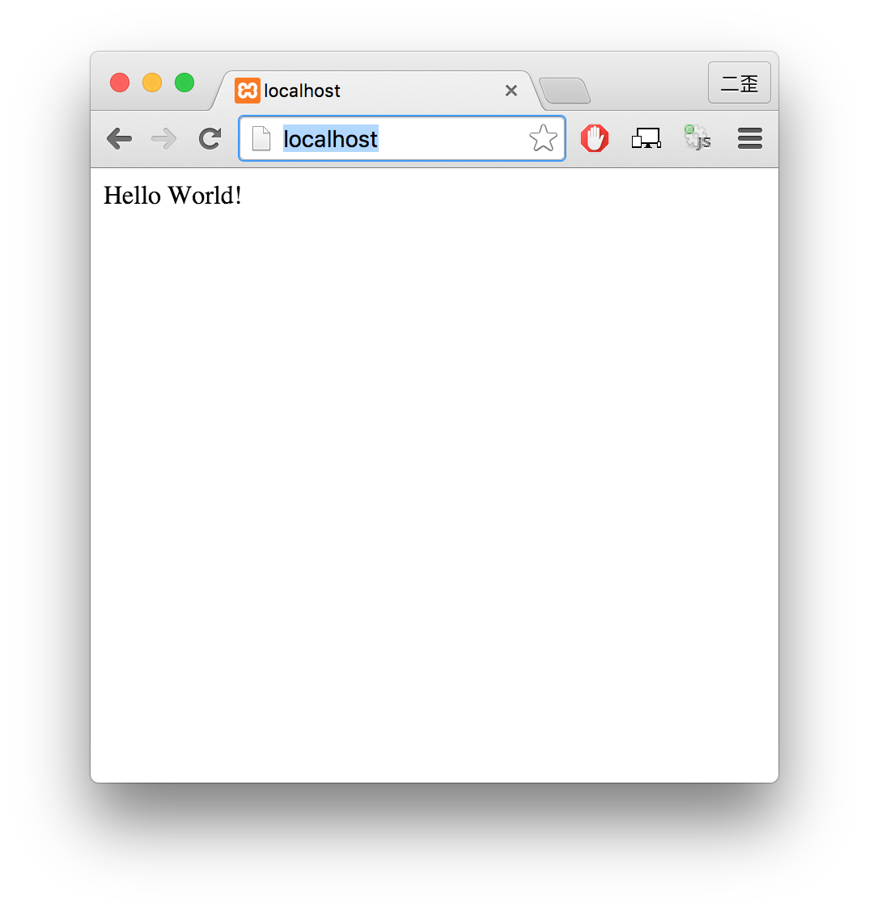
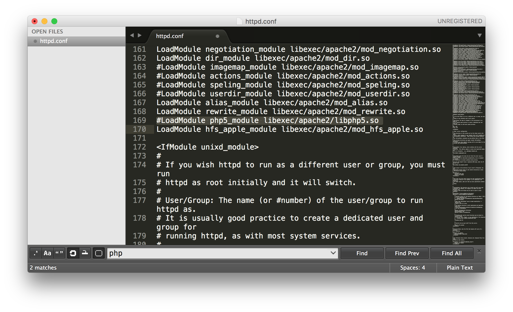
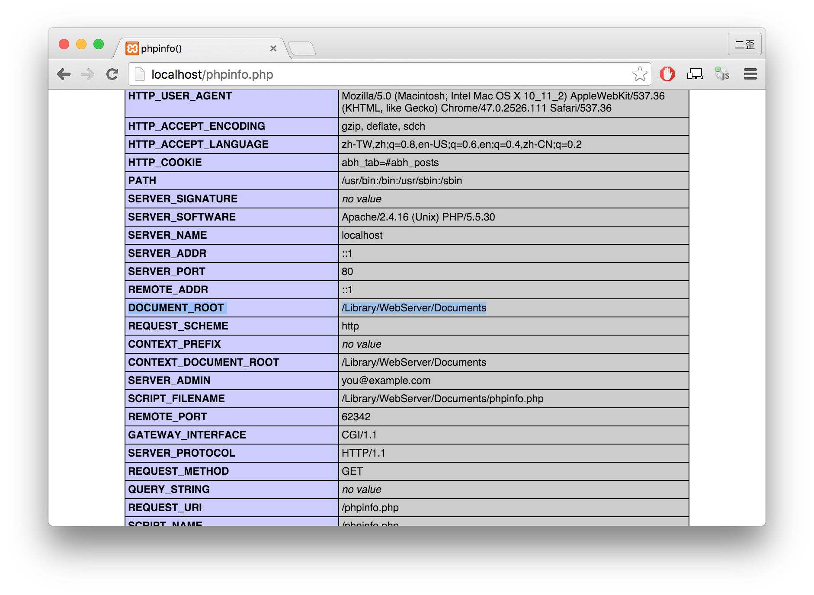
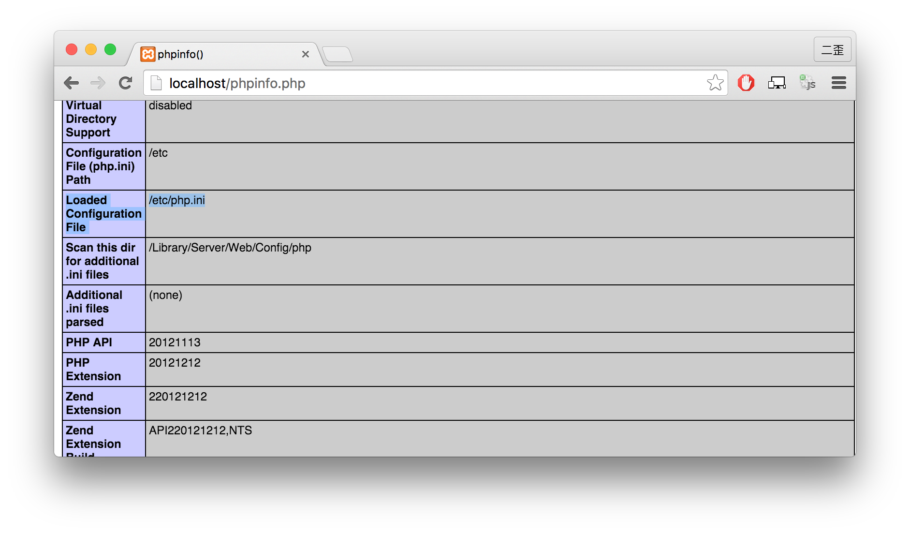

Apache, MySQL, and PHP are a very popular stack.
Wordpress, based on PHP and MySQL, for example, is the most popular CMS in the world. “WordPress was used by more than 23.3% of the top 10 million websites as of January 2015.” – Wikipedia
AppServ is a simple PHP, MySQL, and Apache package for Windows OS; XAMPP can be installed on Linux, Mac OSX and Windows. “X” stands for cross-platform.
However, XAMPP has replaced MySQL with MariaDB after version 5.6.14.
If you are about to install Wordpress, it is troublesome.
Pros
1. Good for the Lazy
Simple and fast: with several clicks, all you need is completely installed.

2. GUI
Simple start, stop and restart buttons.

Cons
1. All Files are under the XAMPP directory
Why it is not good?
If you are familiar with Unix-like systems, you may want your files well-organized and store them in the correct directories.
For example, instead of being put in /Applications/XAMPP/bin/, mysql, as a installed program, should be in /usr/local/mysql and you can add it to your PATH variable.

2. Version issue
PHP, MySQL or Apache version is decided by XAMPP, not by you; there may be a reason like compatibility that you have to use specific PHP, MySQL or Apache version.
It is not so easy to upgrade or downgrade.

3. Your Lovely Component was even replaced!
As I said before, XAMPP replaced MySQL with MariaDB.
If you have used XAMPP for a long time and really need MySQL, ooops!
Say Goodbye to Package
In short, a package can never cater to everyone in the world.
Therefore, let’s setup the environment by ourselves now!
Apache
You need not download any binary or installation package.
Mac have already installed Apache for you.
Your web root directory is at /Library/WebServer/Documents.
$ cd /Library/WebServer/Documents
If there is no index.html, let’s create one.
$ echo 'Hello World!' > index.html
You need root permission to start apache.
$ sudo apachectl start
or login as root.
# apachectl start
Open your browser and go to localhost.

PHP
Like Apache, php is already ready and all we need to do is enable it.
Enable PHP module
The config file httpd.conf of Apache is in /etc/apache2.
$ cd /etc/apache2
Open httpd.conf and find this line:
1 | #LoadModule php5_module libexec/apache2/libphp5.so |

Delete the #, save the file and PHP module will be loaded when Apache server restarts.
$ sudo apachectl restart
To see whether PHP module is loaded, you can create a phpinfo.php file at the root directory of server.
1 |
|

Where’s my php.ini?
Your default php.ini is in /etc, which is a symlink of /private/etc.

MySQL
Installation
Please follow the instruction.
Start MySQL
MySQL is usually installed in /usr/local/mysql.
$ cd /usr/local/mysql
$ ls
There are lots of executables in bin; and some are in support-files.
$ cd support-files
And start MySQL.
$ ./mysql.server start
Socket
For connections to localhost, MySQL programs attempt to connect to the local server by using a Unix socket file.
–mysql.com
So, the last step is making our Apache “know” where our mysql is.
cd /var
mkdir mysql
cd mysql
ln -s /tmp/mysql.sock mysql.sock
PS. /tmp/mysql.sock: the default config stores socket file in /tmp; if you have your own config, replace /tmp/mysql.sock with where your socket really is.
Optional: PHP My Admin
It is common to install PHP My Admin to manage MySQL.
Download it, uncompress the zip, make a dir named phpmyadmin in /Library/WebServer/Documents, and paste all files in it.
Open http://localhost/phpmyadmin.
Bravo! That’s all!
Done!
Congratulations!
Now you have your PHP-and-MYSQL Apache server on your mac!